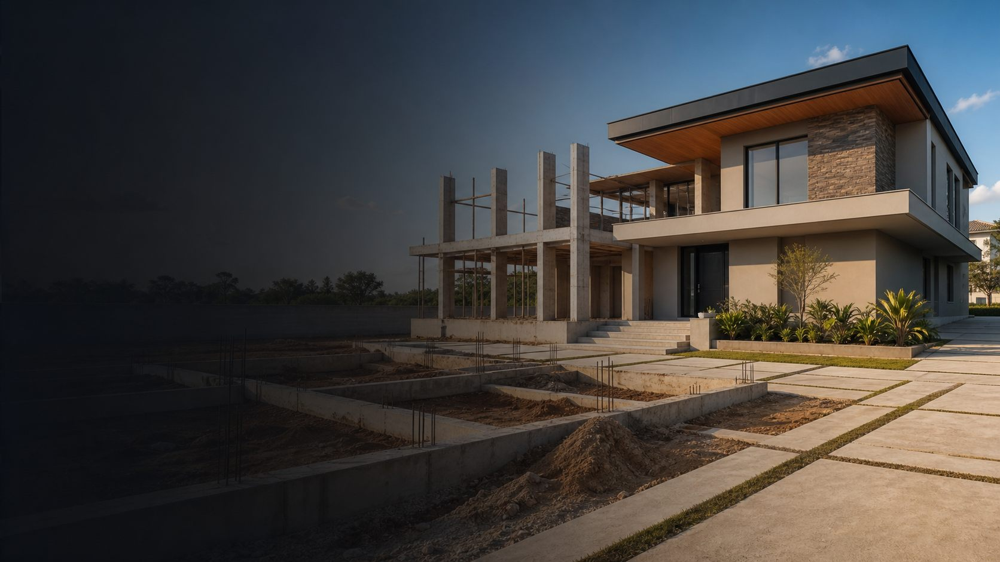
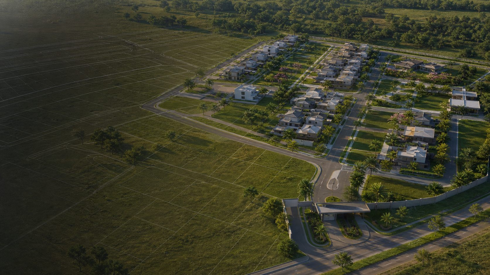

Menu Principal
Escolha a Página
Acesse rapidamente o conteúdo do projeto: página de vendas, material da aula, gerador de prompt para fotografia de estúdio, biblioteca de prompts, prompts para gestantes, takes cinematográficos, prompts de combate, poses masculinas, câmeras para imóveis, montagem gradual de imóveis e montagem arquitetônica.



